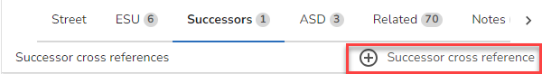

Scotland only
There are a couple of places where actions are displayed for street successor cross references.
1.If you select the Successors tab for a street you have the option to add a successor cross reference for the street e.g.

Action |
Description |
Add a successor cross reference for the street |
2.If you hover over a Successor on the Successors tab for a street e.g.

Action |
Description |
Delete the successor cross reference for the street |